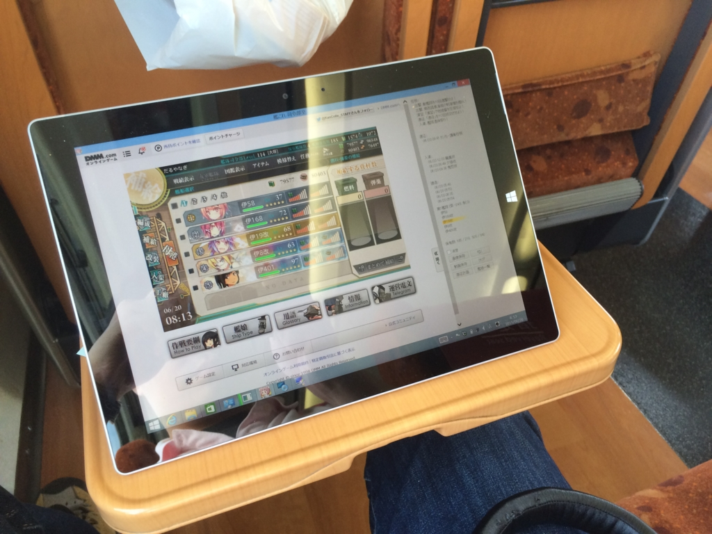

あれからもう2年か～……Surface 3 の LTE 回線を解約してきました
公開日：

Surface 3 の LTE 回線（Y! モバイル）を解約してきました。丸2年使ったというわけですねー。時が経つのは速いわ。
歴代最高に思い入れのある端末
これまで
- 初代 Surface（Windows RT）：艦これ端末 → 確かなかじ先生の元へ旅立った気がする
- 初代 Surface Pro（会社で購入してもらった）
- Surface 2（Windows RT）：艦これ端末 → 親父に売却
- Surface 3：艦これ端末 → Windows Insider Preview 検証（兼開発＆テスト用）端末
- Surface Pro 3：買ったものの五月蠅い＆熱いで出番は少なく、Windows Insider Preview 検証端末 → Surface 2 の後継として親父に売却
を購入してきましたが、歴代の Surface のなかでもっとも活躍した、思い入れのある端末になりました。
Surface 3 のよいところは、
- 歴代モデルの中で一二を争う携帯性：どこでも艦これができる
- ファンレス：静かに艦これができる
- モバイル回線付きモデルがある：山奥でも艦これができる
あたりですかね。一方、
- 少し非力：Intel Atom なので。でも、艦これには十分だよ
- 充電トラブルで苦労した：後述
というのは弱点ですね。あと、個人的にはペン入力がまだ活かせていません。Windows 10 Creators Update になってようやくガシガシ使うようになりましたが……まだまだ修行が足りないかなって感じですね。
電源トラブル
Surface 3 で一番困った点は、電源トラブルでした。純正のアダプターとケーブルを挿しても充電が始まらなかったり、アダプターとケーブルを挿して“充電中”になったことを確認してから放置したのに、いつの間にか充電が止まって、挙句、完全に放電してしまっていたり、純正ケーブルで充電できなくなったのでサードパーティー製ケーブル（ミニB）を購入したら、充電できなかったり、抜けやすかったり。
とうとう充電ができなくなったので修理に出し、エディオンで Macbook を買って勉強会を凌いだこともありました（いや、ただの飲み会だったので、買わんでもよかったんだが）。
そうこうするうちに、クラムシェルの Macbook（入ってるのは Windows）はやっぱり膝の上で使いやすいなーってことになったり、艦これの提督を引退したり、交換後も電源回りのトラブルを根絶できたわけではなかったりで、一時期 Surface 3 の出番はかなり減ってしまったのですが、ドッキングステーションを中古で購入してからは充電トラブルとは無縁となり、今では Windows Insider Preview の検証機として活躍してくれています。
日帰りなら Surface 3、泊りがけなら Macbook を持っていくのが今のスタイルになっています（家にあるドッキングステーションじゃないと安定して充電できんしなｗ）。
後継機に臨むこと
さて、巷では次々世代の Surface Pro（2017）が発売になっていて、Macbook Pro の 1/5 ～ 1/4 ぐらいの勢いで話題になっていますが、個人的にも気になっていて、購入する予定です。ファンレス、LTE 回線は外したくないので、LTE モデルがでたら Core i5 のヤツを買う！
ただ、昔はクールだと感じていた TypeCover に限界を感じていることもあり、Surface Book の方がいいかなぁ、とも感じています。仕事柄、やっぱりキーボードの比重が高いのと、Macbook をつかっていると広いタッチパッドはやっぱり便利だなーと思うんで（TypeCoverはタッチパッド狭すぎんよー）。だからといって Macbook＋Bootcamp が最高かというと、あれはあれで BackSpace/Delete 周りとか気に入らないし、Windows のタッチパネルドライバーが3点ゼスチャーを認識してくれないからダメだ。
Surface を Macbook みたいにしちゃうキーボード Brydge に期待したこともあったけど、ドイツ語配列キーボードを送り付けられて、サポートのメール出したのに返事ないし、三本指ゼスチャーの一部が動かないし、やっぱり割高だしねー。
というわけで、当分はまだまだ Surface 3（＋Macbook）をお出かけ PC にするつもり。まだまだ頼みまっせ―、相棒さんよー！